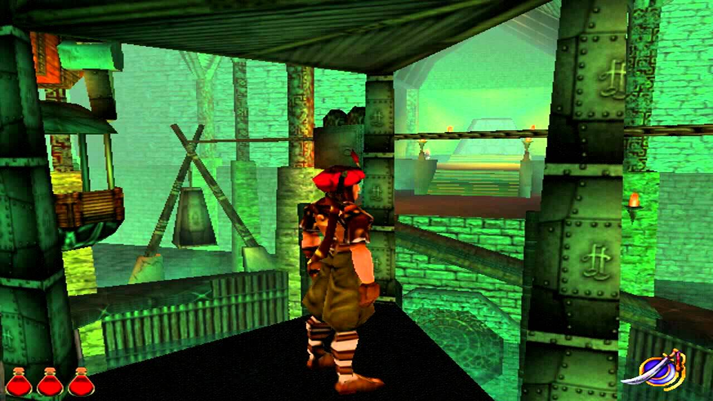

Prince of Persia 3D is an action-adventure video game, developed and published by Red
Orb Entertainment for Microsoft Windows, is the third game in the Prince of Persia series.
The game debuted in 1999, 10 years after the original, and incorporated 3D graphics in its gameplay.
In 2000, a Sega Dreamcast version under the name Prince of Persia: Arabian Nights was
developed by Avalanche Software and published by Mattel Interactive, which had previously
purchased both Red Orb Entertainment and The Learning Company. Many of the control flaws
from the original PC version were corrected and other notable bugs were fixed, improving
the gameplay of this port, although it still suffers the same camera problems. This version
was only released in North America.